"The "Unnamed Flight Engine" (pronouced "yoo-fee") is a kerosene/liquid oxygen fueled rocket engine that I'm in the process of testing. It's meant to be a testbed for a future series of potential rocket engines that will eventually power UBC Rocket's first liquid-fueled rockets. This is an in-depth article on my contribution to the design and testing process of UFE.
Design
The engine was designed with a custom calculator that the team wrote. This produced all of the chamber and injector dimensions. Our philosophy here was to build something simple and easy to put together, and to get it on a test stand as soon as possible.

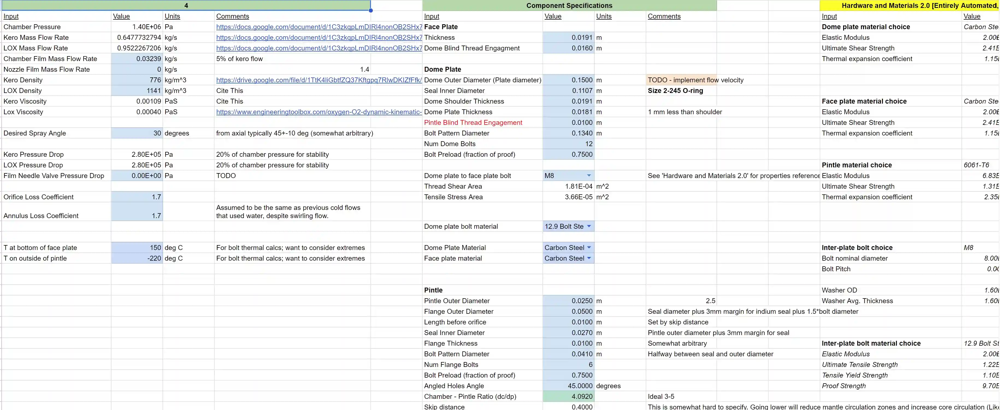
The injector was designed as a 3-element pintle with an interrupted annulus.

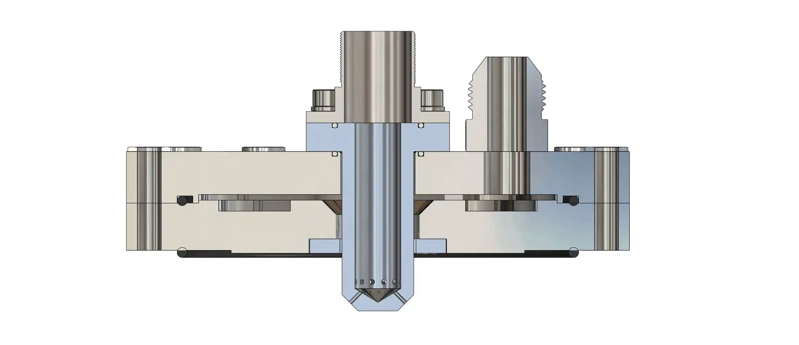
The chamber was designed with numerical hand calculations verified through the program Rocket Propulsion Analyis

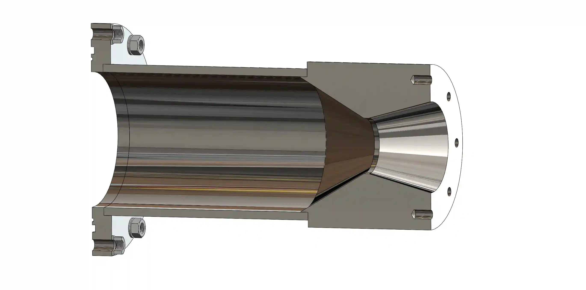
Analysis
I conducted several kinds of analysis on the rocket engine. I had to made sure that the material and geometries we chose would hold up to the temperatures and pressures of operation, and that mass would be optimized for hotfire conditions.


For example, the pintle analysis showed that the original fuel reservoir in the injector would cause uneven flow. This signature off-center spray pattern was clear across every simulation run up to that point, with all kinds of different pintle designs. There was something wrong with the kerosene distribution manifold, and I eventually discovered a flow rate differential that the pressure distribution pocket wasn’t removing, causing a larger amount of fuel to flow through one side of the annulus.


The pintle and annulus geometry was also optimized in CFD. On the left is the original geometry, and the right is the final.


You can see that perfect mixing (green/yellow) occurs mere millimeters away from the pintle exit, providing hopefully excellent performance with the first CFD optimized pintle that UBC Rocket has developed.

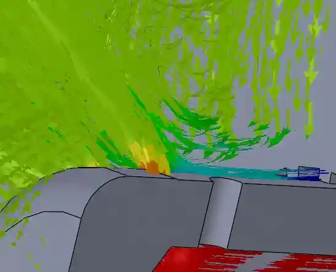
Testing: Hydrostatic Pressure
CURRENT STATUS: UFE has successfully completed its pre-hotfire test campaign, and is now awaiting hotfire!.
Recently, I successfully led and conducted a hydrostatic pressure test on the engine. This is similar to tests done on hydrogen COPVs or other tanks, and it's done to make sure that the engine will contain the pressure of its operation.
I initally machined a plate to seal the end of the engine.

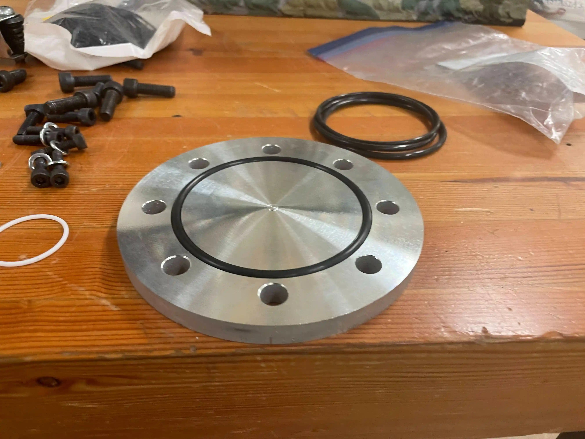
It was then installed alongside the plumbing to the pump.

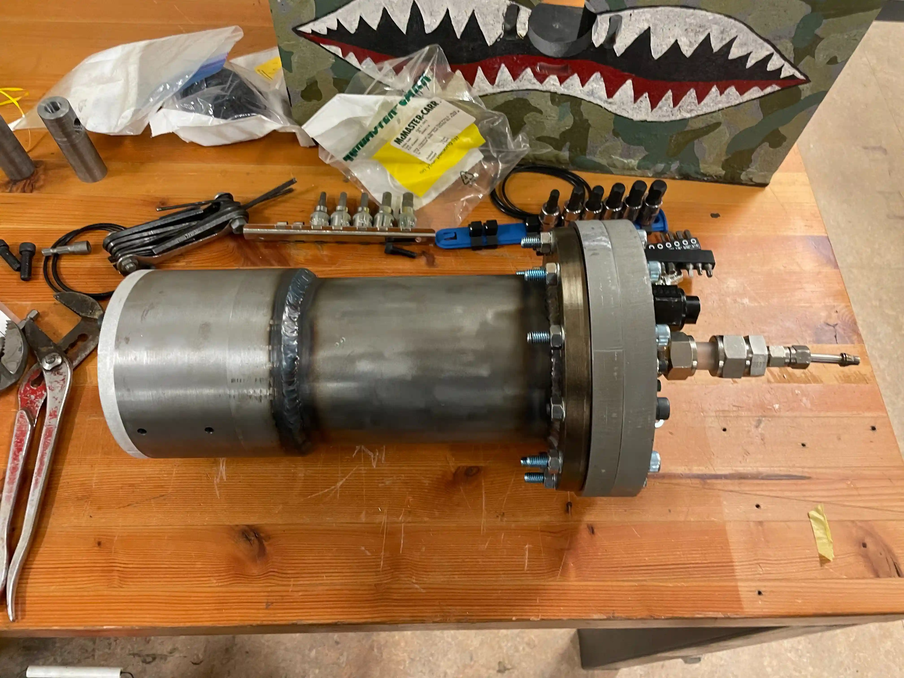
The engine was sealed, with all of the bolts done at a specific torque, and then filled with water.

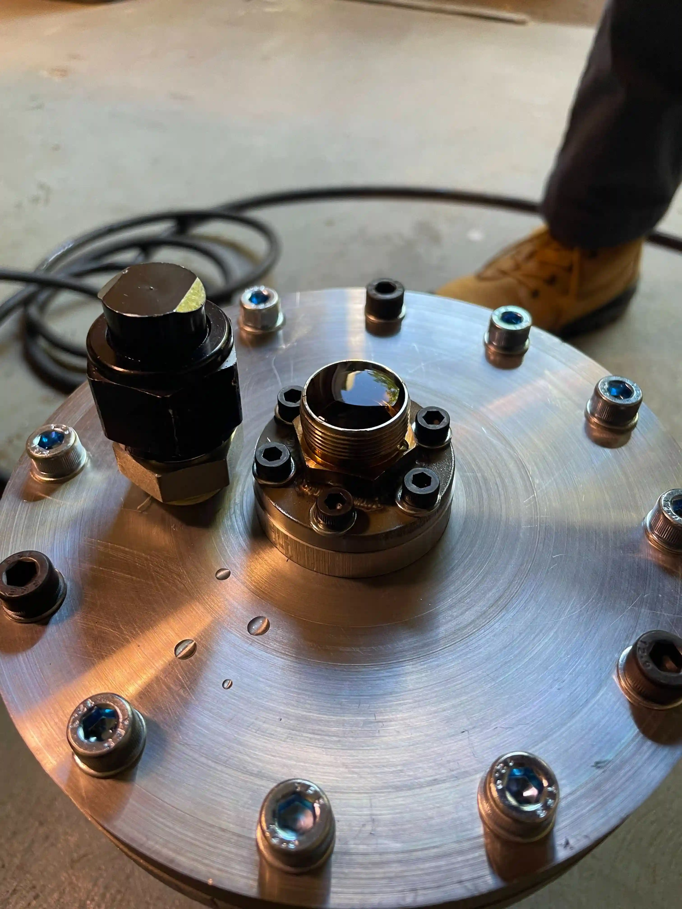
The pump is a 10 ton hydraulic hand pump that is used to pressurize hydraulic fluid and water to the proof pressure of the engine.


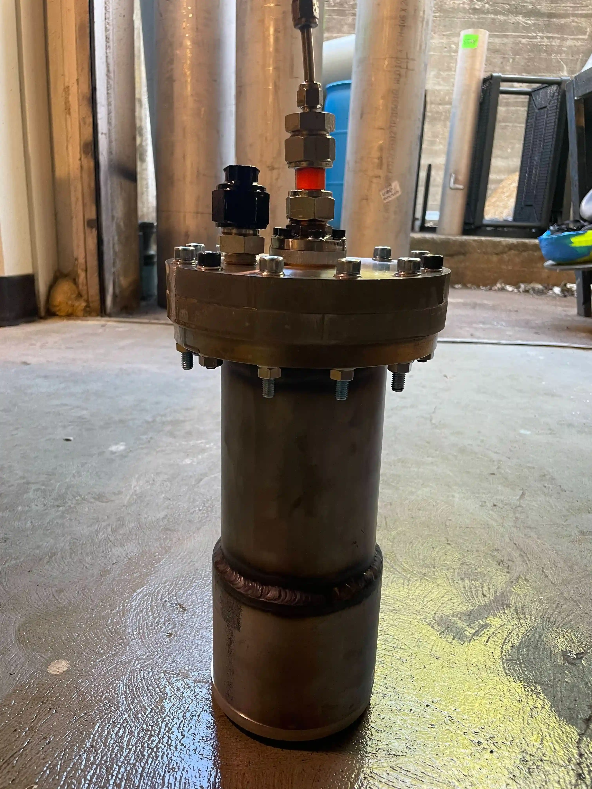
UFE was pressurized twice successfully to its proof pressure of 700PSI, and held there for over 5 minutes. None of the welds or seals leaked, and the engine can now be trusted to hold pressure.
Testing: Cold Flow Part 1
The first cold flow was conducted in hopes of seeing a nice, atomized spray pattern with a 30 degree offset from the center. After hours of setup and figuring out a safe procedure to pressurize and operate the test stand, we conducted the test.

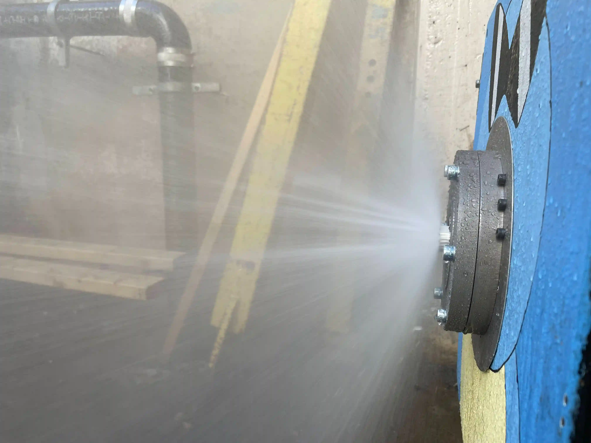
As we can see here, the flow here is too narrow, and heavily distinct lines of "LOX" can be seen streaming from the center. This was an issue, since having such extreme separation of oxidizer and fuel would cause combustion stability and startup issues.
After some in-depth troubleshooting, I discovered that the interrupted annulus, that directs jets of fuel directly into the pintle, was misaligned. This was discovered in inspection of test footage, where the kerosene jets are offset from the radial holes of the pintle.

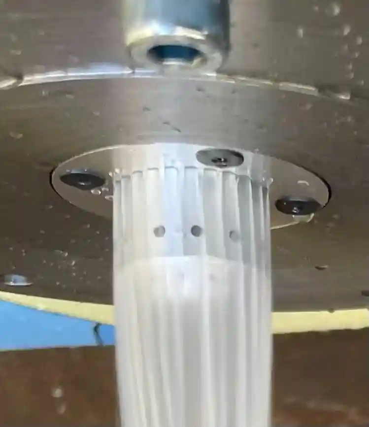
Injector Re-Manufacturing
Eventually, I found out that all of the holes mounting both the pintle and the annulus were placed without reference to anything, and thus nothing was aligned. Even the pintle itself had no relation between its mount and its orifices. Thus, I lead a re-manufacturing campaign through the nights of the weekdays.


We re-machined the annulus on a CNC to ensure no clocking issues were observed in its separators.


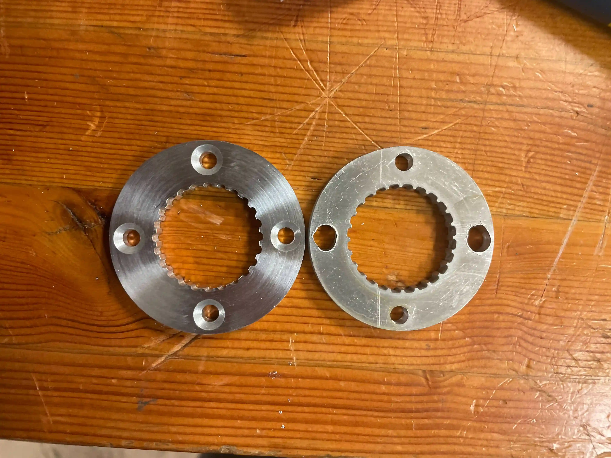
The pintle was re-machined as well, this time in 316 stainless steel for more durability (also, it's shinier!).


Finally, both of the injector plates had their mounting holes re-drilled and clocked correctly this time.


Testing: Cold Flow Part 2
The new annulus was cold-flowed first, beautifully.

And finally, after weeks of troubleshooting, problem solving, and sleepless nights, we have atomization.

I've never seen anything more awesome.
Wet Dress Rehearsal
On the 28th of October, 2023, we mounted the engine to the Darkstar test stand for the last time, and conducted a wet-dress rehearsal according to the actual hotfire procedure.


After troubleshooting misbehaving valves and multiple leaks, the rehearsal successfully conducted a "cold static fire" with liquid nitrogen.
The Unnamed Flight Engine is now ready for hotfire.